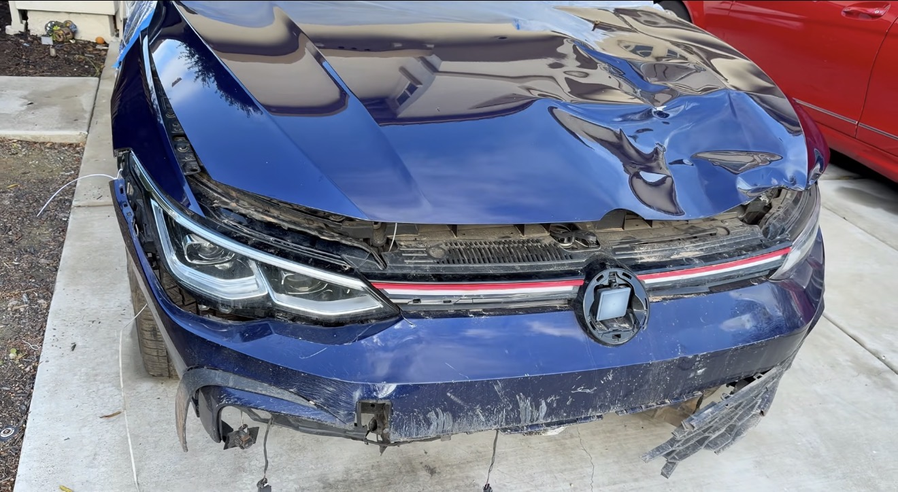

Transmission & drivetrain
Major mechanical work and reassembly were part of returning the damaged GTI to operating condition.
A documented Lakache Auto rebuild, now being prepared for sale. See the finished car, its history, the repairs and the details before you inquire.

This 2024 GTI Autobahn began as a damaged auction vehicle and was rebuilt through mechanical, front-end, body, paint and diagnostic work. The completed car is now being prepared for sale.
The history is part of the listing, not something hidden from the buyer. The goal is to make it possible to understand both the finished GTI and the documented road that brought it back.
Additional current-condition details, final mileage, equipment information and sale terms will be added as the listing is completed.
Major mechanical work and reassembly were part of returning the damaged GTI to operating condition.
The front of the vehicle was rebuilt as the project progressed from auction damage toward a complete car.
Body repair and paint completed the exterior restoration after the mechanical work came together.
A front wheel-bearing magnetic encoder ring was ultimately traced as the source of the lingering ABS issue.
The GTI's accident and salvage history are being disclosed because they are part of the vehicle's story.
Before the final sale presentation is complete, this section will be updated with current warning-light status, exact title wording, tire and brake condition, cosmetic imperfections, recent service, keys, calibrations and any known remaining needs.
Those items will be based on the car's actual condition at the time of sale rather than assumptions from earlier in the build.
Buyers can see where the GTI started and review the documented rebuild rather than receiving a vague rebuilt-title description.
The listing summarizes the repair areas and links directly to the deeper project history.
The listing will be updated with the latest condition and mileage before a sale is finalized.

The vehicle is being prepared for sale. Ask questions about the car, its rebuild or availability. The complete Build Story is also available for a deeper look at the project.